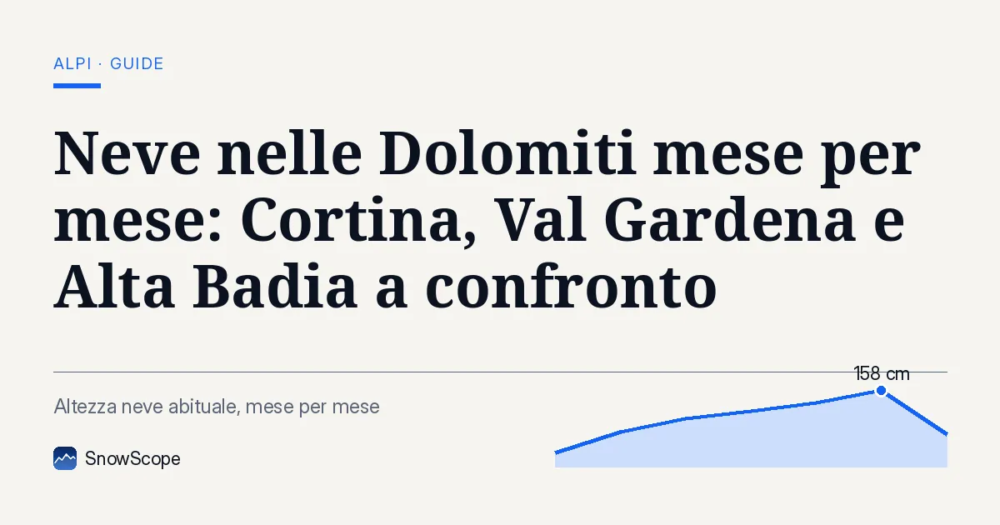

Neve nelle Dolomiti mese per mese: Cortina, Val Gardena e Alta Badia a confronto
Le Dolomiti sono famose per le piste battute sotto la roccia chiara, meno per la neve naturale profonda. Entrambe le cose sono vere. Abbiamo confrontato tre grandi nomi, Cortina d'Ampezzo, Val Gardena e Alta Badia, a metà montagna e in vetta con la nostra storia di 46 inverni. Lo schema è lo stesso ovunque: poco in basso, una lunga stagione affidabile in alto, e la neve più profonda a marzo.
Le previsioni neve in tempo reale per Cortina d'Ampezzo nell'app SnowScopeAltezza neve, allerte powder e mappa 3D, gratis.

Il fondovalle dolomitico è asciutto
Alla base il massimo invernale abituale è di 21 cm a Cortina (859 m), 25 cm in Val Gardena e 35 cm in Alta Badia. Queste valli stanno nell'ombra pluviometrica della cresta alpina principale, così le grandi perturbazioni da nord-ovest arrivano indebolite. Le piste del Sellaronda corrono su neve programmata per gran parte dell'inverno, e nessuno se ne accorge perché la battitura è al massimo livello.
Metà montagna: da dicembre a febbraio
A metà montagna un dicembre abituale ha 30 cm a Cortina (1799 m), 25 cm in Val Gardena e 30 cm in Alta Badia. Gennaio sale a 47, 39 e 45 cm; febbraio a 53, 48 e 55 cm. I tre comprensori si muovono insieme: una perturbazione che colpisce uno colpisce tutti.
La vetta: dove le Dolomiti sono generose
In vetta il massimo abituale è di 208 cm alle Tofane di Cortina (2739 m), 165 cm sopra la Val Gardena e 163 cm sopra l'Alta Badia. Marzo è il mese più nevoso in ogni cima: 132 cm a Cortina, 107 cm in Val Gardena, 110 cm in Alta Badia. La quota in più di Cortina le dà la vetta più profonda delle tre.
Le settimane che non tradiscono
La settimana più affidabile a metà montagna di Cortina è la settimana 13, a fine marzo, con 57 cm abituali; in Val Gardena e Alta Badia è la settimana 9, a inizio marzo, con 51 e 56 cm. In tutte e tre, la neve naturale a metà montagna è un motivo per sciare gli impianti alti a dicembre e tutta la montagna da febbraio.
Mese per mese a tre quote
A dicembre un inverno abituale ha 5 cm alla base (859 m), 30 cm a metà montagna (1799 m) e 72 cm in vetta (2739 m). A gennaio un inverno abituale ha 10 cm alla base (859 m), 47 cm a metà montagna (1799 m) e 98 cm in vetta (2739 m). A febbraio un inverno abituale ha 11 cm alla base (859 m), 53 cm a metà montagna (1799 m) e 114 cm in vetta (2739 m).
A marzo un inverno abituale ha 8 cm alla base (859 m), 55 cm a metà montagna (1799 m) e 132 cm in vetta (2739 m). A aprile un inverno abituale ha 1 cm alla base (859 m), 48 cm a metà montagna (1799 m) e 158 cm in vetta (2739 m).
Un inverno povero e un inverno ricco
La forbice conta quanto la media. A metà montagna, nove marzo passati su dieci avevano almeno 32 cm e uno su dieci 93 cm o più; in vetta la stessa forbice va da 91 a 198 cm.
Sull'intero inverno il massimo a metà montagna è andato da 35 cm nell'inverno più povero a 152 cm nel più ricco, intorno a 75 cm abituali; in vetta da 103 a 528 cm intorno a 208 cm. La neve ha coperto il suolo a metà montagna per 194 giorni in un inverno abituale, e la prima neve della stagione si è posata lì entro il 6 ottobre nella metà degli inverni.
Cosa è cambiato in 46 inverni
Il massimo abituale in vetta è passato da 226 cm nei primi 15 inverni della serie a 172 cm negli ultimi 15 a Cortina. La Val Gardena è passata da 165 a 181 cm e l'Alta Badia da 168 a 176 cm: il gruppo del Sella ha tenuto, le creste alte di Cortina hanno perso. L'inverno scorso il massimo a metà montagna di Cortina è stato di 59 cm.
Consigli per sciatori
- Prenotare marzo per la neve naturale più profonda sugli altipiani; febbraio per le giornate più lunghe di buona battitura.
- A dicembre sciare i settori alti; le piste di valle sono programmate ed eccellenti, ma non profonde.
- Le nostre altezze sono una stima dell'area da inverni passati, non misure dei comprensori; impianti e stato del Sellaronda sui siti ufficiali.
- Tofane e Lagazuoi a Cortina tengono più neve delle tre; Val Gardena e Alta Badia sono l'accesso più comodo al Sellaronda.
Riferimenti e crediti
- Wikipedia, «Dolomiti Superski», consultata il 22 November 2026. it.wikipedia.org/wiki/Dolomiti_Superski
Su questi numeri
Numeri della neve: storico neve SnowScope, 46 inverni passati (1980-81 - 2025-26) a tre quote della località (una stima per un'area, non i bollettini della località). Impianti, piste e accesso: le fonti qui sotto, verificate alla data indicata.
Bollettini valanghe ufficiali: AINEVA – Associazione Interregionale Neve e Valanghe
Cita questo articolo
Per ricerca, didattica o stampa: numeri e grafici sono liberamente riutilizzabili con licenza CC BY 4.0 citando così.
SnowScope (2026), Neve nelle Dolomiti mese per mese: Cortina, Val Gardena e Alta Badia a confronto, https://snowscope.app/blog/it/2026/11/dolomites-snow-by-month-cortina-val-gardena-alta-badia-compared.html, consultato il 2026-11-24
SnowScope (Atlas Labs). (2026, November 24). Neve nelle Dolomiti mese per mese: Cortina, Val Gardena e Alta Badia a confronto. SnowScope snow reports. https://snowscope.app/blog/it/2026/11/dolomites-snow-by-month-cortina-val-gardena-alta-badia-compared.html
BibTeX
@misc{snowscope2026dolomitessnowbymonthcort,
author = {{SnowScope (Atlas Labs)}},
title = {Neve nelle Dolomiti mese per mese: Cortina, Val Gardena e Alta Badia a confronto},
year = {2026},
month = nov,
howpublished = {\url{https://snowscope.app/blog/it/2026/11/dolomites-snow-by-month-cortina-val-gardena-alta-badia-compared.html}},
note = {Published 2026-11-24 09:30 UTC; accessed 2026-11-24}
}· CC BY 4.0 · Metodi, dati e strumenti →
Cortina d'Ampezzo: neve e temperatura per quota, quest'inverno vs lo scorso (strumenti) →
Segui Cortina d'Ampezzo
Gratis: un messaggio quando arriva la neve e il meteo ogni mattina.